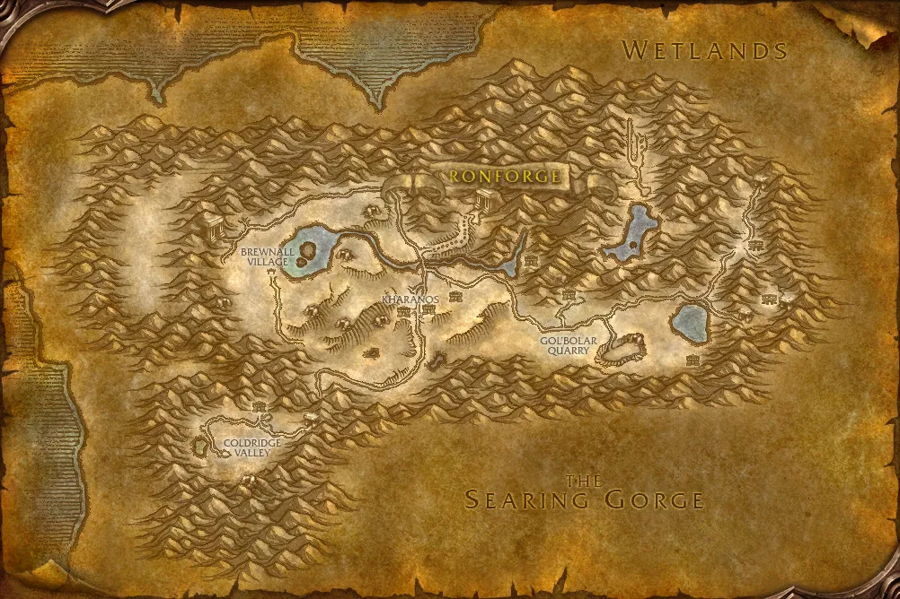

Accès
 Entrée Dun Morogh 24.3, 39.8
Entrée Dun Morogh 24.3, 39.8 5 joueurs · niveaux 29 à 38
5 joueurs · niveaux 29 à 38 0 quête · 5 boss
0 quête · 5 boss
Le point rouge marque l'entrée du donjon.
Toutes les zones sont sur notre carte interactive.
L'ancienne capitale des gnomes, irradiée et envahie par les troggs, sous Dun Morogh.
📅 Mise à jour le 4 novembre 2026🛠 Patch 1.60.1.70755

Entrée Dun Morogh 24.3, 39.8 5 joueurs · niveaux 29 à 38 0 quête · 5 bossLe point rouge marque l'entrée du donjon.
Toutes les zones sont sur notre carte interactive.
| Objet | Type |
|---|---|
| Crispins d'émissaire | Poignets |
| Crache-verre | Distance |
| Sceptre diplomatique royal | Une main |
| Objet | Type |
|---|---|
| Roueur manuel | Deux mains |
| Bottes d'opération gnomebot | Pieds |
| Objet | Type |
|---|---|
| Jambe de l'électrocuteur | Main droite |
| Boulon de l'électrocuteur | Doigt |
| Chiffon graisseux de mécano-tank | Poignets |
| Objet | Type |
|---|---|
| Hydrocane | Deux mains |
| Vengeresse empoisonnée | Une main |
| Botillons acides | Pieds |
| Objet | Type |
|---|---|
| Noyau central de Thermaplugg | Bouclier |
| Bras gauche de Thermojoncteur | Deux mains |
| Boulon chargé | Doigt |
| Réactivateur de gigaflux électromagnétique | Tête |
Butin d'après les données de WoW Classic : Forever a ajouté de nouveaux objets dans les donjons, la liste sera complétée en jeu. Seuls les objets de qualité inhabituelle et mieux sont listés. Passe la souris sur un objet pour voir ses caractéristiques (info-bulle Wowhead), ou clique pour ouvrir sa fiche.
Pas de quête connue pour ce donjon pour l'instant.
Noms des quêtes, des PNJ et des objets d'après les données du jeu (Polestar, CC BY 4.0, et Factoruide/Questie).